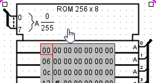
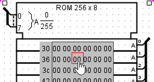

使用手形工具操作存储器
可以使用手形工具（ ）操作存储器内容，但该界面受显示空间限制，只适合最简单的编辑；更复杂的修改通常使用集成的十六进制编辑器更方便。
）操作存储器内容，但该界面受显示空间限制，只适合最简单的编辑；更复杂的修改通常使用集成的十六进制编辑器更方便。
在电路中直接查看和编辑值时，手形工具有两种模式：编辑当前显示的地址，或编辑单个存储值。
地址选择
要编辑显示的地址，请单击显示矩形外部。Logisim 会在顶部地址周围绘制一个红色矩形。

-
输入十六进制数字会相应更改顶部地址。
-
按Enter 键将向下滚动一行。
-
按Backspace 键将向上滚动一行。
-
按下空格键将向下滚动一页（四行）。
数据修改
要编辑某个值，请单击显示矩形内的值。Logisim 将在该地址周围绘制一个红色矩形。

-
输入十六进制数字会更改当前正在编辑的地址处的值。
-
Enter 键或Ctrl+向下箭头将光标向下滚动一行。
-
退格键或Ctrl+向左箭头将光标向左移动一个单元格。
-
空格键或Ctrl+向右箭头将光标向右移动一个单元格。
-
鼠标滚轮或Ctrl+向上箭头、Ctrl+向下箭头将光标向上/向下移动一行。
下一节：弹出菜单和文件。